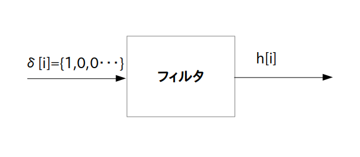

あるディジタル線形フィルタに(ディジタル)インパルス信号
\begin{align*} \delta[i] = \{1,0,0,\cdots\} \end{align*}を入力した際にフィルタから出力されるディジタル信号 $h[i]$ の事を「インパルス応答 (Impulse Response)」と呼びます(図1)。

またインパルス応答 $h[i]$ がインパルス信号を入力した時刻・タイミングによって変化しないフィルタのことを「線形時不変(LTI: Linear Time Invariant) フィルタ」と呼びます。
今回のアクティビティで扱うフィルタは全て線形時不変フィルタであるとします。
ディジタルフィルタにしろアナログフィルタにしろインパルス応答はフィルタごとに異なる波形になりますので、インパルス応答を調べることによってそのフィルタの内部構造や状態や特性を知ることが出来ます。
例えばお医者さんが患者の胸を指でポンと叩いて返って来た音を聴診器で聞くことは、患者の体をフィルタとみなしてインパルス応答を聞くことで患者の体内の状態を調べていることに相当します。
同様に八百屋さんがスイカをポンと叩いて返って来た音を聞くことは、スイカをフィルタとみなしてインパルス応答を聞くことでスイカ内部の状態を調べていることに相当します。